Single choice
SELECT · Input field for picking one of the predefined options
What is a Single choice field?
- 1.1Adding a field and the property panel layout
1.1Adding a field and the property panel layout
Overview
Single choice (SELECT) is an input field for picking one of the predefined options. Use it for items answered with a fixed category, such as smoking status · severity grade · yes/no. It is shown as a dropdown at first, and can also be changed to radio buttons. 3.3 If users need to pick more than one, use the Multiple choice type; for items rated with a numeric grade, use the Scale type.
Screen guide
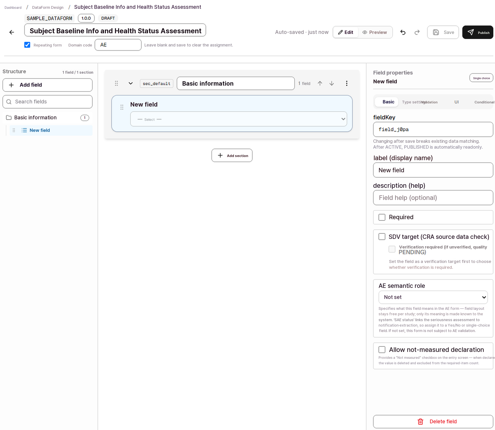
[+ Add field] — Specify the type here to create the field.
The new field is added to the structure tree.
A dropdown appears on the WYSIWYG canvas with the — Select — prompt. There are no options yet. 3.2
fieldKey — The actual key under which the value is stored. 2.1
label (display name) · description (help) — The name and supporting description shown on screen. 2.1
Required · SDV target — Covered in 2.2 · 2.3.
AE semantic role — As the on-screen notice states, “‘SAE status’ links the seriousness assessment to notification · extraction, so assign it to a Yes/No or single-choice field”, this type is a valid target. It is used only in projects that use adverse event forms.
Allow not-measured declaration — Covered in 2.4.
Type badge “Single choice” — The type of the selected field. It cannot be changed after the field is added.
5 property tabs — Basic · Type settings · Validation · UI · Conditional. Chapters 2–6 of this manual correspond to these tabs.
Precautions
Must check Data corruption · Form cannot be completed
- • The type cannot be changed after the field is added. If you chose the wrong type, delete the field and add it again. (Only sub-items of table-type fields and field groups are an exception and allow a type change.)
- • The stored value is the option's
value. Not the text shown on screen (label) but the stored value set for the option goes into the data — this distinction is the most frequently confused point when working with this type. 3.2 - • The structure cannot be changed after publishing (PUBLISH). If changes are needed during operation, publish a new version.
Basic tab — name · required · verification target · not measured
- 2.1fieldKey · display name · help
- 2.2Required
- 2.3SDV target (CRA source data check)
- 2.4Allow not-measured declaration
2.1fieldKey · display name · help
Overview
This area sets the field's names. The storage key (fieldKey) and the name shown on screen (label) are different values, and the point up to which each may be changed differs.
Screen guide
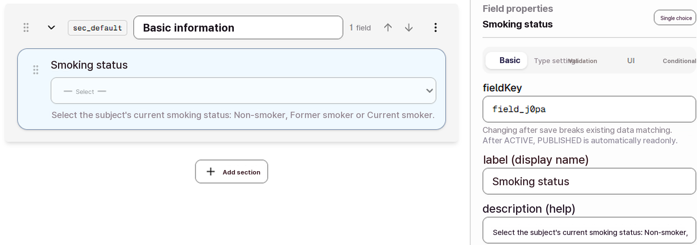
label (display name) — Enter the item name to show on the entry screen.
It is shown as the field title on the canvas.
description (help) — Enter a supporting description to show below the display name. If left blank, nothing is shown.
It is shown in gray text below the dropdown.
fieldKey — The actual key under which the value is stored. When you add a field, it is assigned automatically, like field_j0pa, and can be changed using letters · numbers · underscores. It is not shown on screen — be sure to check the precautions below.
Precautions
Must check Data corruption · Form cannot be completed
- • ⛔ Do not change the fieldKey after saving. As the on-screen notice says, “Changing after save breaks existing data matching” — values already entered are no longer linked to the new key and are effectively lost.
- • Once the form becomes PUBLISHED after ACTIVE, the fieldKey input becomes read-only automatically. The system prevents changes only from that point on, so until then users must take care themselves.
Easily misunderstood behavior
- • Write the meaning of the options in the help. As in the capture, if you write “Select the subject's current smoking status: Non-smoker, Former smoker or Current smoker”, the categories are clear at a glance. Option labels alone often leave the boundaries unclear.
- • The display name can be changed safely at any time, because it is on-screen text, not the storage key.
2.2Required
Overview
Sets whether this item must be selected. When selected, saving is blocked if no option is picked on the entry screen.
Screen guide
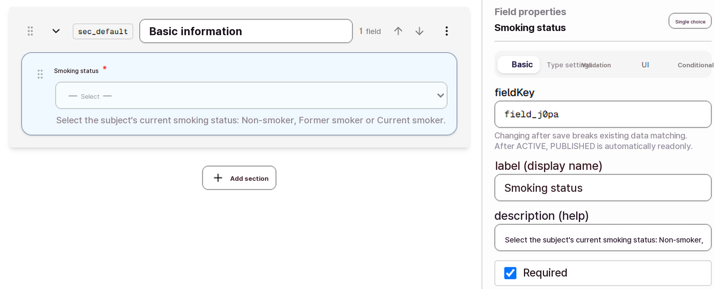
Required — When selected, this field becomes required.
A red asterisk (*) appears to the right of the display name on the canvas, telling users that the field is required.
Precautions
Must check Data corruption · Form cannot be completed
- • ⛔ Before making the field required, check that the options cover every case. If no option applies, the recorder either picks one at random or cannot finish the form. If needed, add an option such as “Not applicable” · “Unknown” to the options 3.2, ask only the relevant subjects with conditional display Ch. 6, or allow the not-measured declaration 2.4.
- • Fields hidden by conditional display are exempt from required validation. Ch. 6 Hiding in the UI tab, by contrast, does not exclude them, so do not confuse the two. 5.3
Easily misunderstood behavior
- • Having “Not applicable” as an option and using the not-measured declaration mean different things — an option is stored as an assessment result, while the not-measured declaration is recorded as not assessable and is excluded from the required-item count. 2.4
Note
- • The required setting is used for the form completion check. If no option is picked, the value is treated as empty.
2.3SDV target (CRA source data check)
Overview
SDV (Source Data Verification) is the procedure in which the clinical research associate (CRA) checks entered values against the site's source data. Here you decide whether this field is a target of that procedure. This setting is the same for all field types, so the screen is also the same regardless of type.
Screen guide


SDV target (CRA source data check) — When selected, this field is included in the CRA's check list.
When it becomes selected, the sub-item is enabled.
Verification required (if unverified, quality PENDING) — Can be set only after ① is selected. When selected, the quality status of the data stays at PENDING until the CRA finishes the check.
Before ① is selected, ② is grayed out and disabled. As the on-screen notice says, “Set the field as a verification target first to choose whether verification is required.”
Precautions
Must check Data corruption · Form cannot be completed
- • Changing a value clears its verification. If you change the option, the quality status returns to PENDING and the CRA must check it again.
Easily misunderstood behavior
- • For category judgments, define the check criteria in advance. Options that involve judgment, such as “Current smoker” and “Former smoker”, can be read differently depending on who looks at the source data — writing the judgment criteria in the help 2.1 speeds up the check.
- • SDV cannot be performed by the person who entered the data. The system enforces cross-verification (Cross-User SoD), so the person entering and the person verifying must be different.
Note
- • The quality status progresses in the order PENDING → VERIFIED → CLEAN. If even one field marked verification required is unverified, the data cannot become CLEAN.
2.4Allow not-measured declaration
Overview
This feature records cases where the answer cannot be confirmed as a distinct value. If no option is picked, “not yet entered” and “checked but unknown” cannot be told apart. This declaration separates the two.
Screen guide

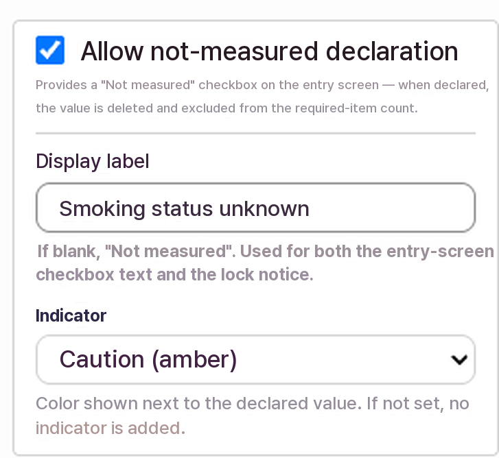
Allow not-measured declaration — When selected, a “Not measured” checkbox is created on the entry screen and the two items below appear.
Display label — If left blank, the default “Not measured” is used.
If you change it to Smoking status unknown, this text is applied to both the entry-screen checkbox and the lock notice.
Indicator — The default is None.
If you change it to Caution (amber), a mark in that color appears next to the declared value.
Precautions
Must check Data corruption · Form cannot be completed
- • Decide first whether “Unknown” will be an option or a declaration. If you have both, recorders are unsure which to use, and the same situation is stored in two different ways. Use one method consistently and state it in the help. 2.2
- • Declaring deletes the value. As the on-screen notice says — “When declared, the value is deleted and excluded from the required-item count.”
Easily misunderstood behavior
- • Declared fields are excluded from the required-item count. Therefore the form can be completed even if the item is required.
Note
- • If no indicator is set, no color mark is applied. If emphasis is needed, select Caution (amber) or another option.
Type settings tab — creating options
- 3.1Type settings tab layout
- 3.2Option list (value · label · active · order · delete)
- 3.3Display style (displayStyle)
- 3.4Option direction (radio only)
- 3.5Default value (defaultValue)
3.1Overall layout
Overview
This is the tab for creating options. Unlike other types, it has no length · range · format; it only sets which options to show and how to show them. This type actually uses four items.
Screen guide
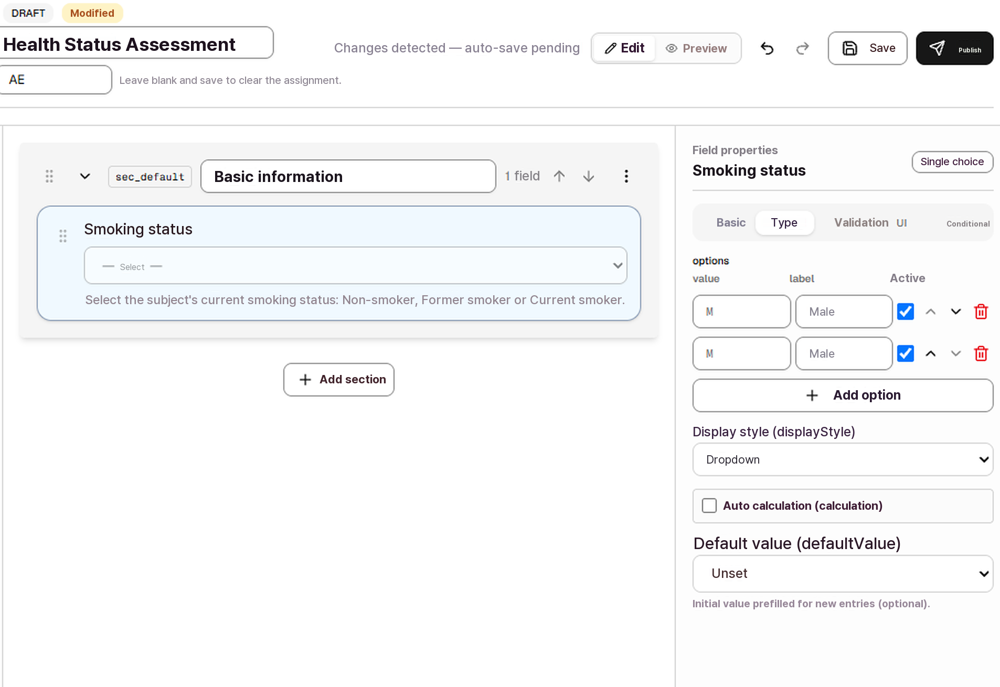
options — The option list. It consists of three columns, value · label · active, plus order and delete buttons. 3.2
[+ Add option] — Adds one more option row. 3.2
Display style (displayStyle) — Choose either Dropdown or Radio. 3.3
Auto calculation (calculation) — The item is shown, but it is not used in this type. It is a feature that computes numbers from other field values, so use it in the Number type.
Default value (defaultValue) — The option to preselect for new entries. 3.5
Precautions
Must check Data corruption · Form cannot be completed
- • At first there are two empty option rows. The faint
M·Maleare input examples, not set values. If you save without changing them, the field has no options. - • Options are listed directly on this screen. Even if several forms use the same options, you must enter them in each, so take care to keep the display text and stored values exactly the same in every form. 3.2
Easily misunderstood behavior
- • Choosing Radio reveals one more item. “Option direction” is shown only when the display style is Radio. 3.4
Note
- • The layout of this tab is fixed by the type selected when the field was created. If the type differs, the items in this tab also differ.
3.2Option list (value · label · active · order · delete)
Overview
Create options one per row. A row consists of stored value (value) · display text (label) · active status, and you can change the order or delete the row with the buttons on the right. This screen is the core of this type.
Screen guide
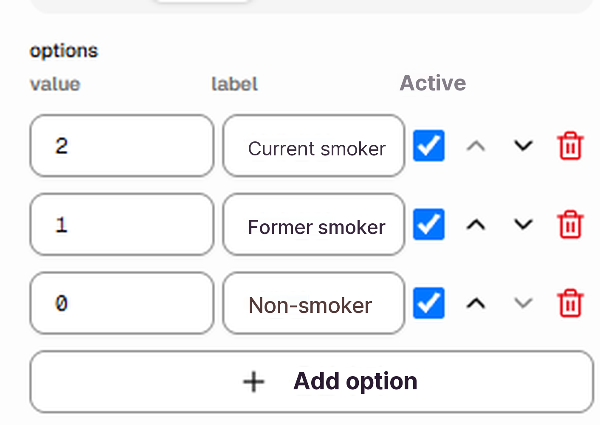
value — The value stored in the data. In the capture they are 2 · 1 · 0. When conditional display 6.2 or validation rules 4.3 reference this field, they also use this value.
label — The text shown on screen. In the capture they are Current smoker · Former smoker · Non-smoker. It does not go into the data.
Active · order (↑↓) · delete (🗑) — Clearing Active lets you take the option out of the list without deleting it. Use the arrows to change the display order and the trash can to delete the row.
[+ Add option] — Adds one more option row. Repeat as many times as needed.
Precautions
Must check Data corruption · Form cannot be completed
- • ⛔ Do not change value after publishing. If data is already stored as
2and you change value toS, it is no longer possible to tell which option the existing values belong to. If you only want to fix the display text, change only the label — the label is always safe to change. - • ⛔ Think about analysis when deciding on value. Using
0 · 1 · 2as in the capture puts the grade order into the values, but using numbers for categories without an order makes people read an order that does not exist. If there is no order, strings that show the meaning, such asNEVER·FORMER, are safer. - • Take care when clearing Active for an option that already has stored values. It can no longer be picked in new entries, but existing data remains as is — values not in the list end up mixed into the data, so check the impact first.
Easily misunderstood behavior
- • The order is the order in which recorders read the options. For items with levels, such as severity, arrange them consistently from mild to severe — if the order differs between forms, wrong selections increase.
Roles of the three columns
| Column | What goes in | Stored in the data? | Can it be changed? |
|---|---|---|---|
| value | Stored value (e.g. 2) | Stored | Do not change after publishing |
| label | Display text (e.g. Current smoker) | Not stored | Can be changed at any time |
| Active | Whether the option is offered | Not stored | Change with care during operation |
3.3Display style (displayStyle)
Overview
Sets how the options are shown. Choose between Dropdown (collapsed, then expanded) and Radio (all options visible). The stored value is the same either way.
Screen guide
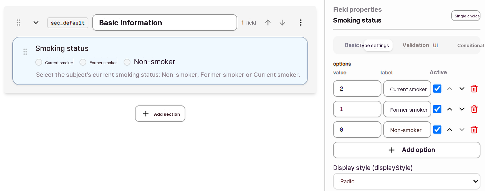
Display style (displayStyle) — Choose from the selection list. The default is Dropdown, and the capture shows it changed to Radio.
The canvas changes to three radio buttons, showing all options. With the dropdown, only the single — Select — line was visible.
Precautions
Easily misunderstood behavior
- • Radio is better when there are few options. Users can pick right away without expanding a list, and seeing all options at a glance reduces wrong selections.
- • Dropdown is better when there are many options. With radio buttons the screen gets longer and the following items are pushed down.
- • Choosing Radio reveals the “Option direction” item. You can set how many to place per row. 3.4
Note
- • Changing the display style does not change stored values. Only the on-screen appearance changes, so changing it during operation does not affect the data.
Difference between the two styles
| Display style | Screen | Good for |
|---|---|---|
| Dropdown (default) | Collapsed, then expanded | Many options · keeping the form short |
| Radio | All options visible | Few options (2–5) · quick selection |
3.4Option direction (radio only)
Overview
Sets how many radio buttons to place per row. This item appears only when the display style is Radio and is not shown for Dropdown.
Screen guide
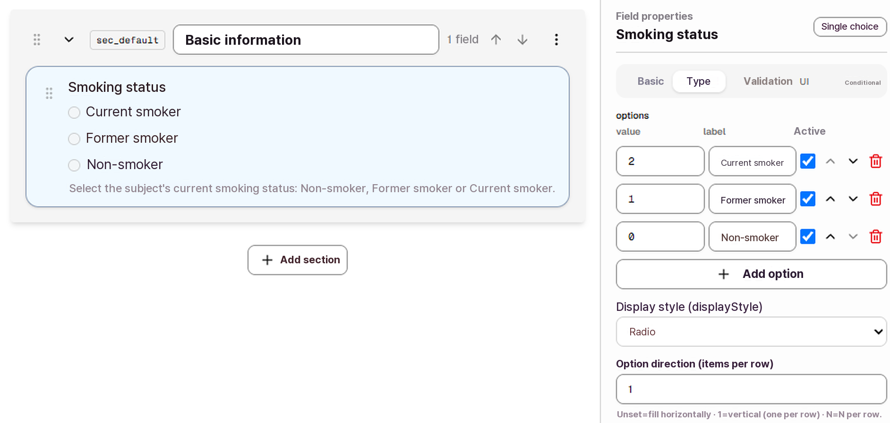
Option direction (items per row) — Enter a number. The capture shows 1.
The radio buttons are arranged vertically, one per row. In 3.3 they were side by side horizontally.
Precautions
Must check Data corruption · Form cannot be completed
- • If you switch the display style back to Dropdown, this setting disappears from the screen. When you change it back to Radio, check whether the value is still there. 3.3
Easily misunderstood behavior
- • Set options with long text to vertical (1). If they fill horizontally, the line breaks fall unevenly, and it becomes confusing which text belongs to which button.
- • A vertical layout is safer for important judgment items. When options are lined up top to bottom, mistakes from pressing the neighboring button decrease.
- • It works together with layout width 5.2. If you narrow the field width, the specified number may not fit in one row.
Layout by input value
| Input | Layout | Good for |
|---|---|---|
| Blank (unset) | Fill horizontally — placed side by side as far as the width allows | Short option text |
1 | Vertical — one per row | Long text, or when wrong selections must be reduced |
N | N per row | When you want a neat 2- or 3-column layout |
3.5Default value (defaultValue)
Overview
The option to preselect when a new entry starts. Pick one of the options you created. For this type, the result cannot be checked on the edit screen, so you must switch to [Preview].
Screen guide
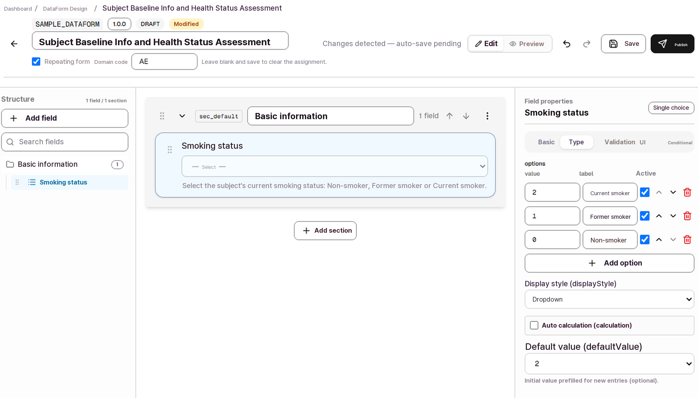
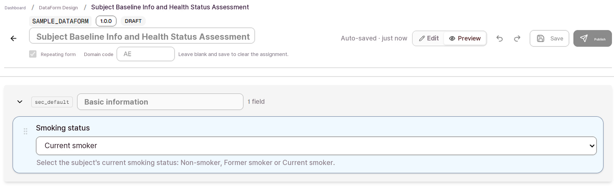
Default value (defaultValue) — Pick the value to preselect for new entries. The list shows stored values (value), so 2 is picked in the capture. (optional)
The edit screen canvas still shows only — Select —. This is not because the setting was not applied, but because the edit screen does not render the default value.
[Preview] — Switch to Preview at the top.
“Current smoker” is selected in the dropdown. Here you can confirm that you pick by value (2) when setting it, and that it appears on screen as the label.
Precautions
Must check Data corruption · Form cannot be completed
- • ⛔ Do not set a default value for items that require judgment. If a value is preselected, recorders may pass over it without checking, and it can no longer be told whether the item was actually assessed. In particular, do not set one for safety · efficacy judgment items.
- • The default value is specified by value and appears on screen as the label. To avoid confusing the two and ending up with the wrong option as the default, check the text in the preview after setting it. 3.2
Easily misunderstood behavior
- • Do not conclude that the setting failed by looking only at the edit screen. For this type, the default value does not appear on the edit screen canvas — always check it in [Preview].
- • The default value applies only to newly created entries. Data already saved is not changed.
Validation tab — checking values before saving
- 4.1No validation rules
- 4.2Adding a rule
- 4.3Completed rule — Compare with another field
4.1No validation rules
Overview
This tab collects rules that check whether a value meets conditions before saving. Single choice can only be picked from the options you created, so it needs no range check; instead, use this tab to check relationships with other fields. 4.3
Screen guide
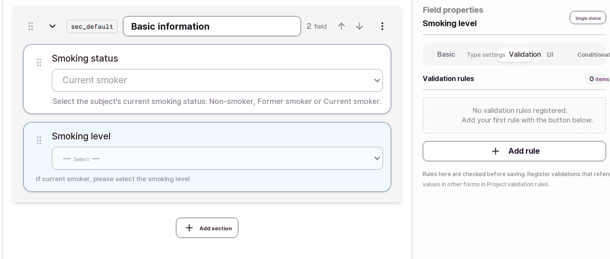
[+ Add rule] — Creates the first rule. The screen after selecting it is explained in 4.2.
The Validation rules area and the number of registered rules. Initially it is 0 items.
When there are no rules, the notice “No validation rules registered. Add your first rule with the button below.” is shown.
Notice at the bottom — “Rules here are checked before saving. Register validations that reference values in other forms in Project validation rules.”
Precautions
Must check Data corruption · Form cannot be completed
- • ⛔ Validations that reference values in other forms cannot be created here. Register such rules on the “Project validation rules” screen. This tab only handles checks that are complete within the same form.
Easily misunderstood behavior
- • The capture has two fields: “Smoking status” and “Smoking level” — the meaning of the second field depends on the first, so in 4.3 you create a rule that links the two fields.
- • You do not have to create rules. For most items the options alone are sufficient — use rules only when a relationship is truly needed.
4.2Adding a rule
Overview
Selecting [+ Add rule] in 4.1 creates a Rule 1 block. Initially Value range is set, but what Single choice actually uses is Compare with another field — changing ruleType changes the screen. 4.3
Screen guide
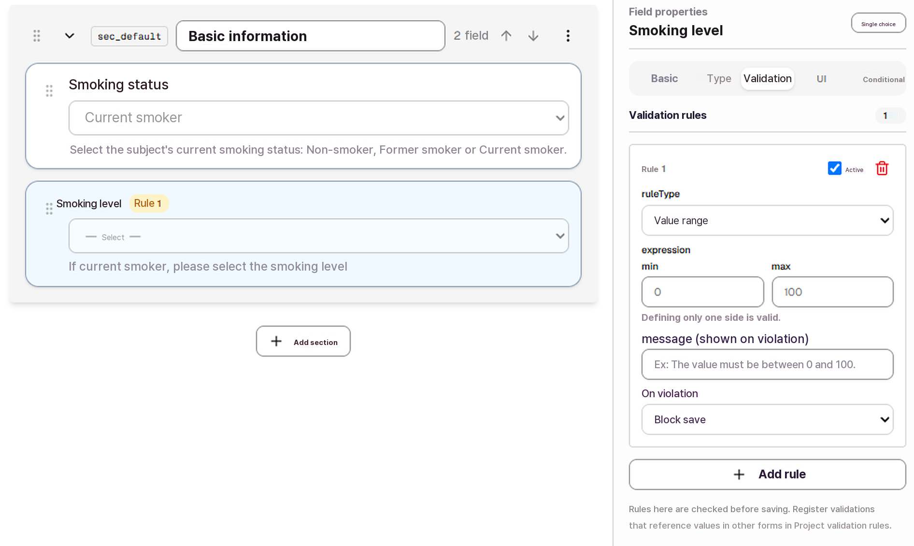
[+ Add rule] — Creates one more rule. (It is the same button you selected in 4.1.)
The “Rule 1” block is created, and a “Rule 1” badge appears next to the display name on the canvas.
The number of rules changes to 1 item.
Active checkbox and Delete icon — You can pause a rule without deleting it.
ruleType — The kind of rule. Initially Value range is selected.
min — The lower-limit box that appears when Value range is chosen.
max — The upper-limit box that appears under the same condition.
The faint 0 · 100 and “Ex: The value must be between 0 and 100.” are input examples, not set values.
message (shown on violation) — The message shown to users when the rule is violated.
On violation — Select either Block save or Warning. (Depending on ruleType, it may not be selectable — 4.3)
Precautions
Must check Data corruption · Form cannot be completed
- • ⛔ Do not use “Value range” as is for Single choice. If the stored values are strings such as
NEVER, a size comparison is meaningless, and even if they are numbers, values outside the options cannot be entered in the first place, so there is nothing to check. 3.2 - • If message is left blank, users cannot tell why saving was blocked. Be sure to enter it.
Easily misunderstood behavior
- • What is useful for this type is “Compare with another field.” It checks relationships such as “this item can be answered only when a specific value was chosen in the previous question.” 4.3
- • You can create several rules, and saving succeeds only when all active rules are satisfied.
4.3Completed rule — Compare with another field
Overview
Changing ruleType to Compare with another field changes the screen completely. Because it checks against the value of another field in the same form, you can express relationships where whether this item is allowed depends on the answer to a previous question.
Screen guide
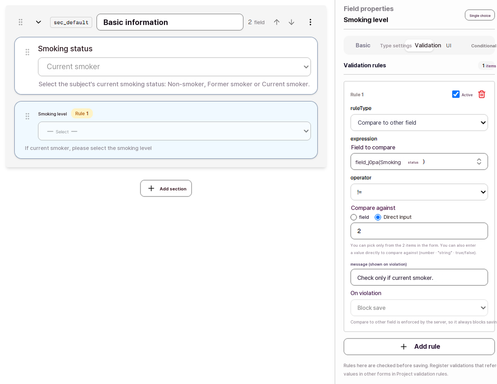
ruleType = Compare with another field — When selected, the boxes below change for comparison.
Field to compare — Pick another field in the same form. The capture shows field_j0pa(Smoking status).
operator — The comparison method. The capture shows != (not equal).
Compare against — Choose between Field and Direct input. In the capture, 2 is entered as direct input — the stored value (value) of “Smoking status”. 3.2
On-screen notice — “You can only choose from the 2 items in the form. For the comparison target, you can also enter a value directly (number · "string" · true/false).”
message (shown on violation) — The capture shows Check only if current smoker.
On violation — Grayed out and disabled. As the on-screen notice says, “Compare with another field is server-enforced, so it always blocks saving.” — for this rule, Warning cannot be chosen and it is fixed to Block save.
Precautions
Must check Data corruption · Form cannot be completed
- • ⛔ Be sure to check the direction of the condition before publishing. The principle is to write validation rules as the condition that must be satisfied, but the setting in the capture (
Smoking status != 2) and the message (“only if current smoker”) read as opposites. A single inequality sign reverses the meaning, so after setting it, check the actual behavior in the preview. - • ⛔ Enter value, not label, in Compare against. If you write “Current smoker”, the comparison is meaningless — check the stored value in the option list first. 3.2
Easily misunderstood behavior
- • This rule cannot be set to Warning. On violation is fixed to Block save, so use it only for relationships that must be blocked. If you only want to inform users, it is better not to ask at all by using conditional display Ch. 6.
- • For the same relationship, conditional display comes first — if the question is not asked in the first place, it cannot be answered wrongly. Ch. 6
UI tab — screen layout and guidance text
- 5.1UI tab layout
- 5.2Layout width
- 5.3Read-only · hidden
- 5.4placeholder · helpText
5.1Overall layout
Overview
This tab sets how the field is laid out and explained on screen, not the value itself. Settings in this tab do not change the stored data itself. However, Hidden only hides the field on screen and does not exclude it from the required-item count, so check 5.3 before using it.
Screen guide
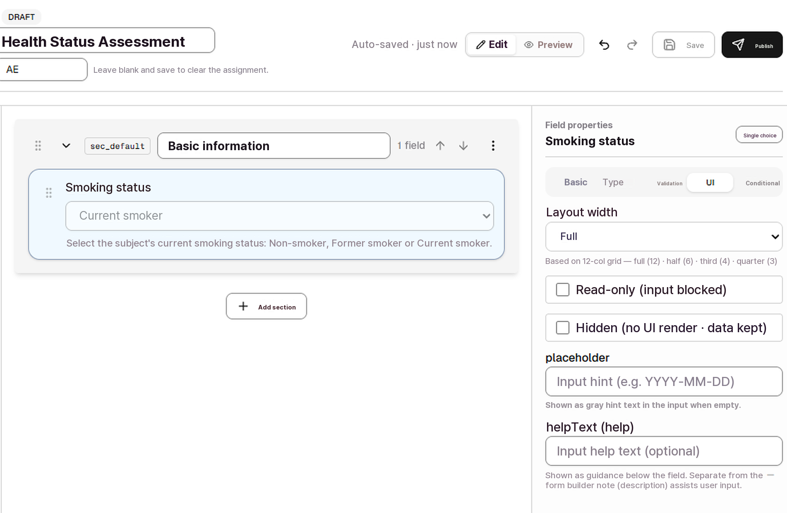
Layout width — The width this field takes up in a row. The meaning of the options is given in the notice right below: “Based on 12-col grid — full (12) · half (6) · third (4) · quarter (3)”. 5.2
Read-only (input blocked) — Shows the field but prevents changes. 5.3
Hidden (no UI render · data kept) — Hides the field from the screen. 5.3
placeholder — The hint shown when there is no value. In this type, it replaces the — Select — text. 5.4
helpText (help) — Guidance text shown below the field. 5.4
Precautions
Must check Data corruption · Form cannot be completed
- • The effect of the width differs by display style. A dropdown stays on one line even when narrowed, so it is fine, but with radio buttons the options wrap and the layout breaks. 3.3 · 3.4 · 5.2
Easily misunderstood behavior
- • The faint
Input hint (e.g. YYYY-MM-DD)·Input help text (optional)in the input boxes are input examples, not set values.
Note
- • By default, Layout width = Full, and Read-only · Hidden are cleared.
- • There is no setting for the color or size of the options. They are adjusted only with the display style 3.3 and option direction 3.4.
5.2Layout width
Overview
Select the width this field takes up on a 12-column grid that divides a row into 12 columns. If the display style is Dropdown, it stays on one line even when narrowed, so it is relatively safe.
Screen guide
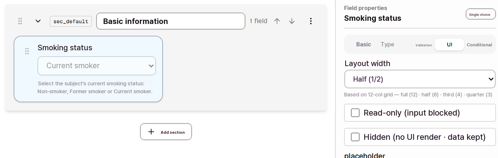
Layout width — Specify the width from the selection list. The example is Half (1/2).
The dropdown shrinks to half width. The help text also wraps to two lines to fit the narrower width.
Precautions
Must check Data corruption · Form cannot be completed
- • ⛔ Do not reduce the width of fields shown as radio buttons. The options line up horizontally, and if the width is too small, the line breaks fall unevenly and become hard to read. If you must reduce it, also change the option direction to 1 (vertical). 3.4
Easily misunderstood behavior
- • Short options such as yes/no fit well in half width. Placing two related questions side by side makes the form shorter.
- • When you reduce the width, the next field is placed on the same row. If the total in a row exceeds 12, the field moves to the next row.
Note
- • On devices with a narrow screen, fields may be stacked one per row regardless of this setting.
Width options
| Option | Columns used | With Dropdown | With Radio |
|---|---|---|---|
| Full | 12 | Ample room | Options side by side horizontally |
| Half (1/2) | 6 | Fine — place paired items side by side | Options may wrap |
| Third (1/3) | 4 | Long text may be cut off | Not recommended |
| Quarter (1/4) | 3 | Short options only | Not recommended |
5.3Read-only · hidden
Overview
Makes the field unchangeable or not shown. In both cases, stored values are kept as is.
Screen guide
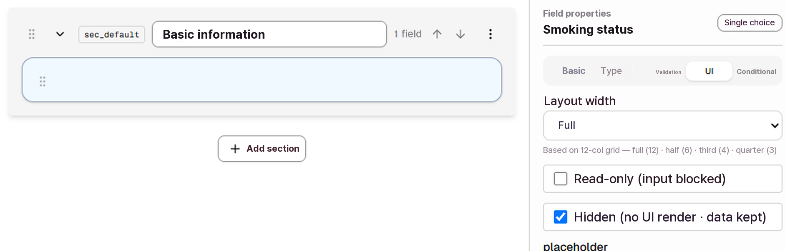
Read-only (input blocked) — The picked value is shown, but users cannot change it. (Cleared in this capture)
Hidden (no UI render · data kept) — The field is not shown on the entry screen. Values already saved are not deleted.
The field disappears from the canvas, and the section looks empty.
Precautions
Must check Data corruption · Form cannot be completed
- • ⛔ Do not hide required items. Hiding in the UI tab only hides the field on screen and does not exclude it from the required-item count — an item users cannot pick stays in the count, and the form can no longer be completed.
- • Hiding does not delete data. The field only disappears from the screen; to delete the value, you must delete the field.
Easily misunderstood behavior
- • This differs from hiding in the Conditional tab. Fields hidden because the condition is not met are excluded from the required-item count Ch. 6. Both use the word “hidden”, but they are handled in exactly opposite ways in validation, so tell them apart.
- • Read-only and Hidden are different. Read-only means “shown but not changeable”, and Hidden means “not shown”. If an answer already picked needs to be visible for confirmation, use Read-only.
Note
- • Even when hidden, the field remains in the Structure panel — you can select it again and revert the setting.
5.4placeholder · helpText
Overview
Two texts that tell users what to pick. In this type, placeholder has a different role from other types — it is not the faint text inside an input box but changes the text shown before anything is picked.
Screen guide
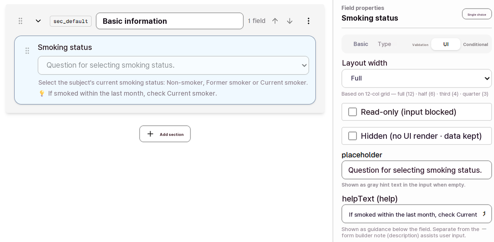
— Select — text, and helpText appears below the fieldplaceholder — Enter the text to show when nothing is selected. The capture shows Question for selecting smoking status.
It replaces the — Select — text in the dropdown. When a value is picked, that text disappears and the selected label is shown.
helpText (help) — Enter the guidance text to show below the field. The capture shows If smoked within the last month, check Current smoker.
It is shown below the field with a light bulb icon (💡). It does not disappear when a value is picked.
Precautions
Must check Data corruption · Form cannot be completed
- • Write the selection criteria in helpText. Writing the criterion that draws the boundary, as in the capture's “if smoked within the last month, check Current smoker”, reduces variation between recorders — option labels alone do not tell where “Current” ends and “Former” begins.
- • When shown as radio buttons, the placeholder is not visible. All options are displayed, so there is no place for text shown before anything is picked — when using Radio, write the guidance only in helpText. 3.3
Easily misunderstood behavior
- • description and helpText are different items. As the on-screen notice says, helpText is “Separate from the form builder note (description) — assists user input”. If both are entered, both lines are shown.
Roles of the three texts
| Item | Where shown | In Single choice | Where set |
|---|---|---|---|
| placeholder | Text shown when nothing is selected | Replaces — Select — | UI tab |
| helpText | Below the field (💡) | State the selection criteria | UI tab |
| description | Below the display name | Which categories the options fall into | Basic tab 2.1 |
Conditional tab — showing a field based on another value
- 6.1Enabling conditional display
- 6.2Setting the condition
6.1Enabling conditional display
Overview
This feature shows or hides this field based on the value of another field. Use it for branching such as asking about smoking level only when “Smoking status = Current smoker” — it is a feature well suited to chaining Single choice fields.
Screen guide
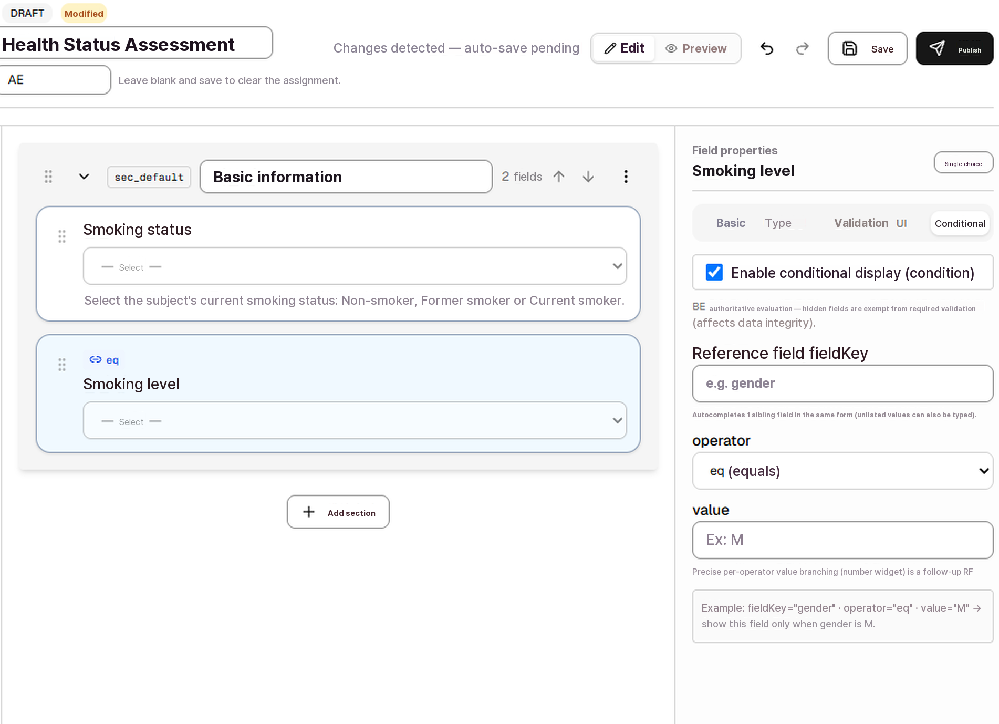
Enable conditional display (condition) — When selected, the condition settings below appear.
⚠ On-screen notice — “Hidden fields are exempt from required validation (affects data integrity).” The condition is evaluated by the system.
A 🔗 eq badge appears above the field on the canvas to show that a condition is applied.
Reference field fieldKey — Another field in the same form on which the condition is based. Sibling fields in the same form are autocompleted, and you can also type a value not in the list.
operator — The comparison method. The default is eq (equals).
value — The value to compare with.
Example at the bottom — fieldKey="gender" · operator="eq" · value="M" → show this field only when gender is M.
Precautions
Must check Data corruption · Form cannot be completed
- • Setting a condition can exempt a field from required validation. While a field is hidden because the condition is not met, the form is completed with that field empty even if it is required. This is intended behavior, not a defect.
- • If the condition becomes false while a value has already been picked, that value disappears from the screen. Take care when changing the field the branch is based on later.
Easily misunderstood behavior
- • Consider conditional display before validation rules 4.3. If people to whom the item does not apply are not asked at all, there is no chance of a wrong pick or a blocked save. Validation is the last resort for cases that must still be blocked.
Note
- • If you enable the condition and leave the reference field blank, the condition is never met. Be sure to fill in all of ②–④. 6.2
6.2Setting the condition
Overview
This is the state after entering the full condition enabled in 6.1. With this setting, this field is shown on the entry screen only when the value of the “Smoking status” field is 2. This is where the distinction between value and label is clearest when referencing a Single choice field.
Screen guide
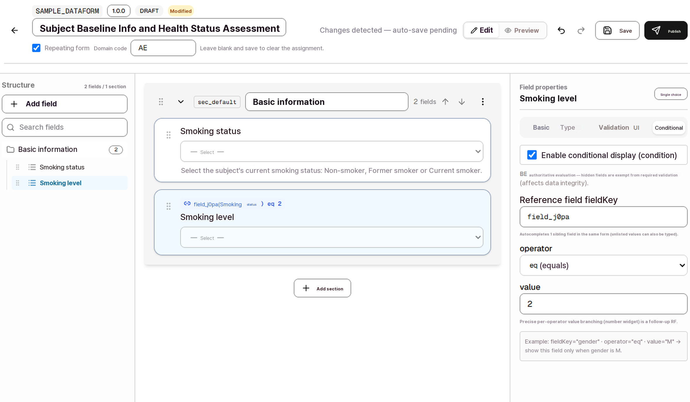
Smoking status is 2 (Current smoker)Reference field fieldKey = field_j0pa — Points to the “Smoking status” field in the same form.
operator = eq (equals)
value = 2 — Enter the option's stored value (value), not the “Current smoker” shown on screen. 3.2
Result of entering all of ①–③ — the canvas badge becomes specific: 🔗 field_j0pa(Smoking status) eq 2.
The referenced “Smoking status” field must be in the same form; you can check it in the structure tree.
Example at the bottom — fieldKey="gender" · operator="eq" · value="M" → show this field only when gender is M.
Precautions
Must check Data corruption · Form cannot be completed
- • ⛔ Enter the stored value, not the label, in value. If you write “Current smoker”, the condition is never met and this field is never shown. Check the stored value in the option list of the referenced field first. 3.2
- • ⛔ Changing the value of the referenced field silently breaks the condition. For example, if you change the value of “Current smoker” from
2toCURRENT, this condition simply stops being met without any error — this is why changing value after publishing is risky. 3.2 - • Changing or deleting the fieldKey of the referenced field also breaks the condition. Conditions are linked by fieldKey, not by display name. 2.1
Note
- • Using conditions makes forms shorter and reduces unnecessary input. However, conflicting conditions create fields that are never shown, so always check in Preview after setting them.
Appendix
- 7.1Settings at a glance
7.1Single choice field settings at a glance
Settings by tab
| Tab | Item | What it sets | Section |
|---|---|---|---|
| Basic | fieldKey | The actual key under which the value is stored (do not change after saving) | 2.1 |
| label (display name) | Item name shown on screen | 2.1 | |
| description (help) | Supporting description below the display name — which categories the options fall into | 2.1 | |
| Required | Whether it must be selected (first check that the options cover every case) | 2.2 | |
| SDV target | Whether it is a CRA source data check target · whether verification is required | 2.3 | |
| AE semantic role | This type is a valid target — ‘SAE status’, etc. | 1.1 · ※ | |
| Allow not-measured declaration | Whether “Unknown” can be recorded as a value · display label · indicator | 2.4 | |
| Type settings | options — value | The stored value (do not change after publishing) | 3.2 |
| options — label | Text shown on screen (can be changed at any time) | 3.2 | |
| options — active · order · delete | Whether the option is offered · display order · row deletion | 3.2 | |
| Display style (displayStyle) | Dropdown / Radio | 3.3 | |
| Option direction | Items per row — shown only for Radio | 3.4 | |
| Default value (defaultValue) | Option to preselect (specify by value · check in Preview) | 3.5 | |
| Validation | ruleType | Kind of rule — this type uses Compare with another field | 4.2 · 4.3 |
| Field to compare · operator · Compare against | Condition checked against another field in the same form (compared by value) | 4.3 | |
| message | Message shown to users on violation | 4.3 | |
| On violation · Active | Compare with another field is fixed to Block save · rule active · inactive | 4.3 | |
| UI | Layout width | Width on the 12-col grid (do not reduce for Radio) | 5.2 |
| Read-only | Shown but not changeable | 5.3 | |
| Hidden | Not shown on screen (stored value kept · still counted as required) | 5.3 | |
| placeholder · helpText | placeholder replaces — Select — · selection criteria go in helpText | 5.4 | |
| Conditional | Condition active | Whether conditional display is used (exempt from required validation) | 6.1 |
| Reference field fieldKey | Field in the same form on which the condition is based | 6.2 | |
| operator · value | Comparison method and value to compare (enter the stored value) | 6.2 |
Must remember
Must check Data corruption · Form cannot be completed
- • Distinguish value from label. What is stored in the data is value, and conditional display · validation · default value are all specified by value. 3.2 · 3.5 · 4.3 · 6.2
- • Do not change value after publishing. The meaning of existing data is lost, and conditions that referenced that value silently break. 3.2 · 6.2
- • Do not leave the two empty option rows as they are. The faint
M·Maleare examples, and the field ends up with no options. 3.1 - • For “Compare with another field”, check the direction of the condition before publishing — On violation is fixed to Block save. 4.3
- • Do not reduce the width of radio fields — if you must, set the option direction to 1 (vertical). 3.4 · 5.2
Easily misunderstood behavior
- • The default value does not appear on the edit screen. It can be checked only in [Preview]. 3.5
- • placeholder replaces
— Select —and is not visible with Radio. 5.4
Note
- • For the same relationship, conditional display comes before validation rules — if the question is not asked, it cannot be answered wrongly. 4.3 · 6.1
Not covered in this document
※ AE semantic role — This type is a valid target, but there is no capture of the setup process, so no separate section is provided. For details on how to use it, see the AE documentation. 1.1
Common code (CodeGroup) integration — The system has a way to manage options as project common codes, but this screen has no item for it. Options must be listed directly in each form, so check that value and label are kept exactly the same. 3.2
Auto calculation (calculation) — The item is shown, but it is not used in this type. Use it in the Number type. 3.1
“Value range” validation rule — It can be chosen as a rule type, but since this type only picks from options, there is no use for it. 4.2